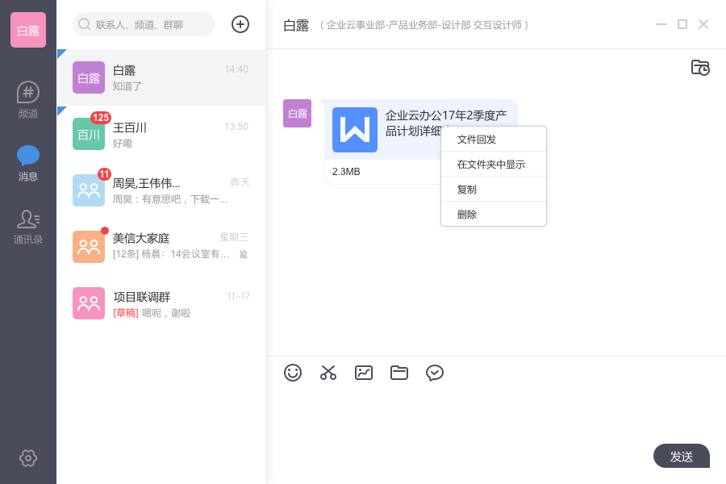
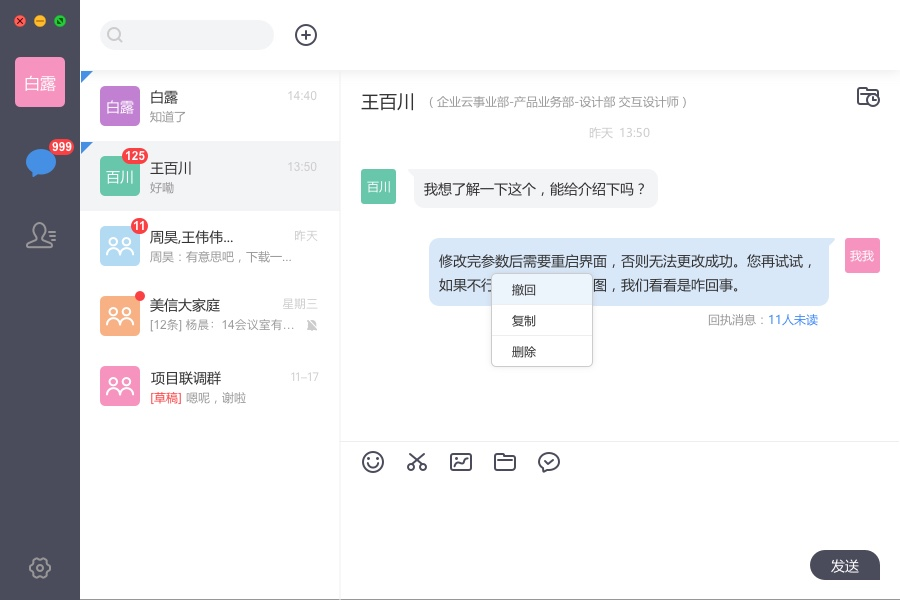
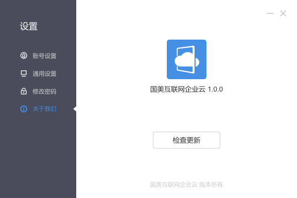
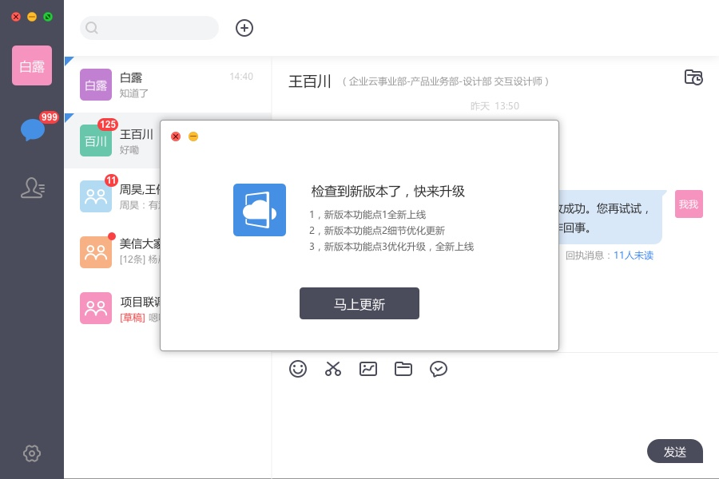
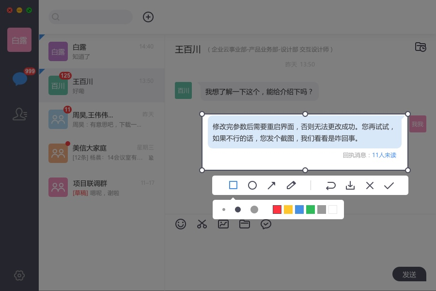

Aeromind1.1.1 for Windows 优优化版本更新机制；支持消息复制，删除，撤回等操作；
发布日期：2017-6-29 发布版本：v1.1.1
1.新增“文件回发”功能。针对“需要批阅、填表、调查类文档，编辑填写后需再发送给对方”的场景，我们进行进一步简化，增加 “文件回发”，完成文件快速回传

2. 新增消息右键操作：支持对消息的复制，删除，撤回等操作

3. 优化版本更新操作。检查更新直接体验最新版本


4. 新增“截图”功能。Alt+s 快速截图，提高工作效率
